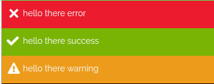
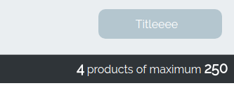

the functions are found in window.SBsdk.SBfunctions
To see all of the functions available:
- open your shopbuilder website
- open the console and type console.log(window.SBsdk.SBfunctions)
Refresh
The refresh function attaches all the libraries again on the selectors if not attached before.
incase of ajax or inserting dom using dom generation functions
if there are some libraries not being initialized on elements
call the refresh function:
window.SBsdk.SBfunctions.refresh();
Menu Titles
A) Delete Existing Menu links:
To delete menu links use the function of window.SBsdk.SBfunctions.delete_menu_links (menuLinksData);
The parameter menuLinksData is of the following structure:
//Structure of the Parameter that should be given
menuLinksData = [
{
menu_type: 'menu_type',
menu_urls: ['/menu-url1', 'menu_title2']
},
{
menu_type: 'menu_type',
menu_urls: ['/menu-url1', 'menu_title2']
},
];
Where:
menu_urls: should be an array of all the urls of the menu links to be deleted.
menu_type: is a string that specifies in which menu do you want to add the menu link.
menu_type can have the following values:
- menu : the front office main menu
- menu_secondary the front office secondary menu
- footer the front office footer
- footer_secondary the front office secondary footer
- navigation_menu the back office navbar menu
Example:
var menuLinksData = [
// deleting the (about us) and (home) menu title from the (main menu) and (footer)
{
menu_type: 'menu',
menu_urls: ['/', '/aboutus']
},
{
menu_type: 'footer',
menu_urls: ['/', '/aboutus']
},
];
window.SBsdk.SBfunctions.delete_menu_links(menuLinksData);
B) Update Menu links:
To update menu links use the function of window.SBsdk.SBfunctions.update_menu_links (menuLinksData);
The parameter menuLinksData is of the following structure:
//Structure of the Parameter that should be given**
var menuLinksData = [
{
menu_type: 'menu_type',
data: [
{
menu_link: {menu_title: 'menu_title1' , menu_url: '/menu-url1' }, // old menu
update_menu_link: {menu_title: 'menu_title1_new' , menu_url: '/menu-url1_new' }, // new menu
},
{
menu_link: {menu_title: 'menu_title1' , menu_url: '/menu-url1' }, // old menu
update_menu_link: {menu_title: 'menu_title1_new' , menu_url: '/menu-url1_new' }, // new menu
}
]
},
{
menu_type: 'menu_type2',
data: [
{
menu_link: {menu_title: 'menu_title1' , menu_url: '/menu-url1' },
update_menu_link: {menu_title: 'menu_title1_new' , menu_url: '/menu-url1_new' },
}
]
}, ...
];
Where:
menu_title : is the title of the menu link.
menu_url : is the url of the menu link.
menu_link : old menu links data
update_menu_link : new menu links data
menu_type is a string that specifies in which menu do you want to add the menu link.
menu_type can have the following values:
- menu : the front office main menu
- menu_secondary the front office secondary menu
- footer the front office footer
- footer_secondary the front office secondary footer
- navigation_menu the back office navbar menu
//Example:
var menuLinksData = [
{
// in main menu
menu_type: 'menu',
data: [
{ // update contact us menu title and url
menu_link: {menu_title: 'Contact Us' , menu_url: '/contact' },
update_menu_link: {menu_title: 'Contact Me' , menu_url: '/contact-me' },
},
{ // update collections menu title
menu_link: {menu_title: 'Collections ' , menu_url: '/collection/Collections' },
update_menu_link: {menu_title: 'My Collection' , menu_url: '/collection/Collections' },
}
]
},
{
// in footer menu
menu_type: 'footer',
data: [
{ // update the contact us menu title
menu_link: {menu_title: 'Contact Us' , menu_url: '/contact' },
update_menu_link: {menu_title: 'Contact meeee' , menu_url: '/contact' },
}
]
}, ...
];
window.SBsdk.SBfunctions.update_menu_links(menuLinksData);
C) Add Menu links:
To add menu links use the function of window.SBsdk.SBfunctions.inject_menu_links (menuLinksData);
The parameter menuLinksData is of the following structure:
//Structure of the Parameter that should be given
menuLinksData = [
{
menu_type: 'menu_type',
data: [
{menu_title: 'menu_title1' , menu_url: '/menu-url1', id:"id1", order: '1', class:'class1 class2' },
{menu_title: 'menu_title2' , menu_url: '/menu-url2', id:"id2", order: '1', class:'class1 class2' ,
sub_menu: [
{menu_title: 'menu_sub_title' , menu_url: '/menu-sub-url' }
]
}
]
},
{
menu_type: 'menu_type',
data: [
{menu_title: 'menu_title' , menu_url: '/menu-url', id:"id3", order: '1', class:'class1 class2' }
]
},
];
Where:
order starts from value 0 it is where you want to position the your menu link
menu_title : is the title of the menu link.
menu_url : is the url of the menu link.
sub_menu : is an array of the menu links.
menu_type: is a string that specifies in which menu do you want to add the menu link.
menu_type can have the following values:
- menu : the front office main menu
- menu_secondary the front office secondary menu
- footer the front office footer
- footer_secondary the front office secondary footer
- navigation_menu the back office navbar menu
Example:
var menuLinksData = [
{
menu_type: 'menu',
data: [
{menu_title: 'menu_title1' , menu_url: '/menu-url1', id:"id1", order: '1', class:'class1 class2' },
{menu_title: 'menu_title2' , menu_url: '/menu-url2', id:"id2", order: '1', class:'class1 class2',
sub_menu: [
{menu_title: 'menu_sub_title' , menu_url: '/menu-sub-url' }
]
}
]
},
{
menu_type: 'footer',
data: [
{menu_title: 'menu_title' , menu_url: '/menu-url', id:"id3" , order: '1', class:'class1 class2' }
]
},
];
window.SBsdk.SBfunctions.inject_menu_links (menuLinksData);
Create Custom Page
A) To create a front office page use the url of /app_page/:
/app_page/{name of page}/{query string 1}/{query string 2}/
Steps:
1- inject a new menu title Or Update a menu title url; This menu title should have the url of your new page / app_page/{name of your page}/
2- now to get your page information check window.SBsdk.SBdata.page
- you will find the name of your page in window.SBsdk.SBdata.page.id
- you will find the querystrings of your page in window.SBsdk.SBdata.page.query_strings
- you can know the type of your page using window.SBsdk.SBdata.page.type in this case it will be custom-front
3- use the pages info (window.SBsdk.SBdata.page) to inject your data and enjoy
B) To create a back office page use the url of /admin/app_page/:
/admin/app_page/{name of page}/{query string 1}/{query string 2}/
Steps:
1- inject a new menu title Or Update a menu title url; This menu title should have the url of your new page /admin/app_page/{name of your page}/
2- now to get your page information check window.SBsdk.SBdata.page
- you will find the name of your page in window.SBsdk.SBdata.page.id
- you will find the querystrings of your page in window.SBsdk.SBdata.page.query_strings
- you can know the type of your page using window.SBsdk.SBdata.page.type in this case it will be custom-front
3- use the pages info (window.SBsdk.SBdata.page) to inject your data and enjoy
User Forms
User forms are the login, register and forget password forms.
SBsdk.SBfunctions.SBsdk_user_forms(action, type);
where the parameter:
action can be:
1- 'login' (opens the login form)
2- 'register' (opens the register form)
3- 'forget-password' (opens the forget password form)
type (optional):
1- 'page' default value (redirects to the action page)
2- 'popup' (opens a popup with the action form)
give it 'popup' to open the action popup
Example: Let's try it out together:
open the console of your shopbuilder website and type.
SBsdk.SBfunctions.SBsdk_user_forms('login', 'popup');
this will open the register popup
Maintain Data From Logged-out To Logged-in Page
This is how to get your data after a successful login:
Step 1:
call SBsdk.SBfunctions.notify_after_popup_login(str data);
while you are logged out with the data you want to maintain (send your data as a string)
Step 2:
use the login popup of the sdk to login..
Step3:
after logging in you will be able to get/access your data in SBsdk.SBdata.page.init_event where:
SBsdk.SBdata.page.init_event = {
id: 'YOUR DATA',
type: 'user',
action: 'after login',
query_strings: '?after-login-event=YOUR DATA'
}
Validating User Uoken
To verify the user token call : window.SBsdk.SBfunctions.verify_user_token(appID, user_token);
Dialog
A) To get a dialog:
call SBsdk.SBfunctions.dialog(content, options);
The parameters:
- content is a string with the dom needed inside this dialog
- options is a an object (Optional)
options can have the following values:
options = {
wrapperClass: 'wrapper-class',
Title: (Str) 'title',
SaveBtn: (Str) 'save-btn-name',
buttons: ['button1name','button2name'],
lockDialog: 1
}
//------------------OR------------------
options = {
wrapperClass: 'wrapper-class',
Title: {name: 'title-name', class: 'title-class'},
SaveBtn: {name: 'save-btn-name', class: 'save-btn-name'},
buttons: [
{name:'btn1name', class:'btn1class'},{name:'btn2name', class:'btn2class'}
],
lockDialog: 1
}
Where:
- SaveBtn is a save button for the dialog
- Buttons are some extra action buttons added in the dialog
- Title is the title of the dialog
- wrapperClass is a class added to the wrapper of the dialog
- lockDialog is a way to prevent the dialog from closing even if another dialog was opened
Example:
// Adding dialog A
SBsdk.SBfunctions.dialog('<div class="dialog-A">Dom content here</div>',{
Title: "Title",
"SaveBtn" : 'save'
});
// Adding dialog B (closes dialog A and adds dialog B that is locked)
window.SBsdk.SBfunctions.dialog('<div class="dialog-B">heyyy<div>', {
lockDialog:1,
Title: 'hello Title',
SaveBtn: 'save me',
buttons: [
{name:'hello', class: 'helloClass'},
{name:'hey', class: 'heyClass'}
]
});
// Adding dialog C (keeps the locked dialog B and adds dialog C above it)
window.SBsdk.SBfunctions.dialog('<div class="dialog-C">heyyy<div>', {
Title: 'hello Title',
SaveBtn: 'save me',
buttons: ['hello', 'hello2']
});
B) To hook or get notified after the dialog has been opened go to dialog event section
C) Dialog Actions
To manage the the dialog use the function
SBsdk.SBfunctions.dialog_actions(dialog_wrapperClass, action);
The parameters:
- action is by default set to remove
Example:
// To close a specific dialog whether locked or not
SBsdk.SBfunctions.dialog_actions(dialog_wrapperClass);
// To close all dialogs from page..
SBsdk.SBfunctions.dialog_actions();
// To close all dialogs but not the locked dialogs
SBsdk.SBfunctions.dialog_actions('.sbsdkDialog:not(.dialog-locked)');
Throbber / Loader
to add a throbber to the page.
call SBsdk.SBfunctions.loader(action, time_in_ms);
Note:
1- SBsdk.SBfunctions.loader() // add a throbber to the page
2- SBsdk.SBfunctions.loader('remove') // removes a throbber from the page
3- SBsdk.SBfunctions.loader('remove', 100) // removes a throbber from the page after 100 ms
4- the throbber is in the following markup: <div class="ajax-progress ajax-progress-throbber sdk-throbber"></div> (Given for styling purposes)
Note:
// @Code
// Consider the following senario
//**app1 calls:**
SBsdk.SBfunctions.loader();
//**app2 calls:**
SBsdk.SBfunctions.loader();
SBsdk.SBfunctions.loader('remove');
// @Result
// In this case the Throbber/Loader Will not be removed from the page
// Unless all apps that registered the throbber calls the `remove` action.
// Thus, to remove the throbber app1 has to call `SBsdk.SBfunctions.loader('remove');`
Carousel
A) carousel:
call the function:
window.SBsdk.SBfunctions.carousel (wrapper_selector, options);
The parameters:
-wrapper_selector is the wrapper of the list items
-options:
// The values given for the options below are the default values
options = {
dots: false,
speed: 300,
slidesToShow: 1,
slidesToScroll: 1,
variableWidth: false,
centerMode: false,
adaptiveHeight: false,
prevArrow: '', //html of prev elt
nextArrow: '' //html of next elt
}
B) initialize a carousel special for magnific popups:
window.SBsdk.SBfunctions.magnific_popup_carousel (wrapperSelector, options);
-wrapperSelector is the selector of magnific popup wrapper ex wrapperSelector = '.field-name-field-image-product .mfp-gallery-image'
-options:
// The values given for the options below are the default values
options = {
dots: false,
speed: 300,
slidesToShow: 1,
slidesToScroll: 1,
variableWidth: false,
centerMode: false,
adaptiveHeight: false,
prevArrow: html of prev elt,
nextArrow: html of next elt
}
Example:
var carousel_options = {
slidesToShow: 4,
slidesToScroll: 4,
nextArrow: '<i class="fa fa-arrow-right"></i>',
prevArrow: '<i class="fa fa-arrow-left"></i>',
};
window.SBsdk.SBfunctions.magnific_popup_carousel('.field-name-field-image-product .mfp-gallery-image', carousel_options);
Messages
list all the functions that can be used to print a message window.SBsdk.SBfunctions.SBmessages
console.log (window.SBsdk.SBfunctions.SBmessages);
To set a message simply call window.SBsdk.SBfunctions.SBmessages.set_message(msg, type, options);
parameters:
-msg is a String
-type is a String -- possible values: success, warning, error
-options -- (Optional)
options = {
positionInWrapperId: 'the-id-of-wrapper-you-want-to-append-this-to',
className : 'give-custom-class-name-for-the-alert-div',
scrollToError : 1 (Only for type error)
}
Examples:
window.SBsdk.SBfunctions.SBmessages.set_message('hello there error', 'error');
window.SBsdk.SBfunctions.SBmessages.set_message('hello there success', 'success');
window.SBsdk.SBfunctions.SBmessages.set_message('hello there warning', 'warning');
window.SBsdk.SBfunctions.SBmessages.set_message('hello there warning in navbar position', 'warning', {
positionInWrapperId :'navbar'
});
window.SBsdk.SBfunctions.SBmessages.set_message('error', 'error', {className: 'sdk-errors'});
Preview:

Top-Action Button
Generates a top action button in the back office pages.
window.SBsdk.SBfunctions.add_top_action_button(options);
The parameter options has the following structure:
options = {
class: 'class', // class of the btn
id: 'idddsss', // id of the btn
name: 'naaameeee', // name of the btn
Title: 'Titleeee' // title of the btn
}

Get Resource - Rendered Raw HTML
In general get resource is a way to get the html with its functionality as it is in the shopbuilder platform.
Usage:
window.SBsdk.SBfunctions.get_resource(resource_type, resource_data, function (result) {
// returns the html of the needed resouce and functionality in (result) var
});
Available Resources:
~~~~~~~~~~~~~~~~~~
-view_product
-This resouce gets the product view html with its functionality. You can place this HTML where you want, for you have full control of it.
-Product node ID is used in the request. {base_url}/sb/product_view/{prodId}
Usage:
window.SBsdk.SBfunctions.get_resource('view_product', {'id': prodId}, function (result) {
// The html of the product and functionality are all in (result) var
});
Dom Generation & Management
To generate dom use: window.SBsdk.SBfunctions.SBmessages.generateDom(type, options);
For all this function details click here
Apply Special Select Effect On Existing Selects
To transform existing select found in the website to a special select use the function of window.SBsdk.SBfunctions.sbsdk_select_style (selector, options);
where:
Selector is your select field selector ex: #selector or .selector
and options: (optional)
options = {
dropdownCssClass: 'class',// class that is added for the dropdown
addAsterisk: defaultValueOfSelectField,// adding astericks for the default value
searchable: {placeholder: 'hello'},// adding a search field with an optional placeholder
}
Note 1: If you want to call this library for a select after ajax call this function in page_event_{{appd}}
Note 2: If you want to generate a special select, check here.
Example:
window.SBsdk.SBfunctions.sbsdk_select_style('select#edit-field-gender-und',
{
dropdownCssClass: 'hello-dropdown-css-class',
addAsterisk: '_none',
searchable: {placeholder: 'hello'}
});